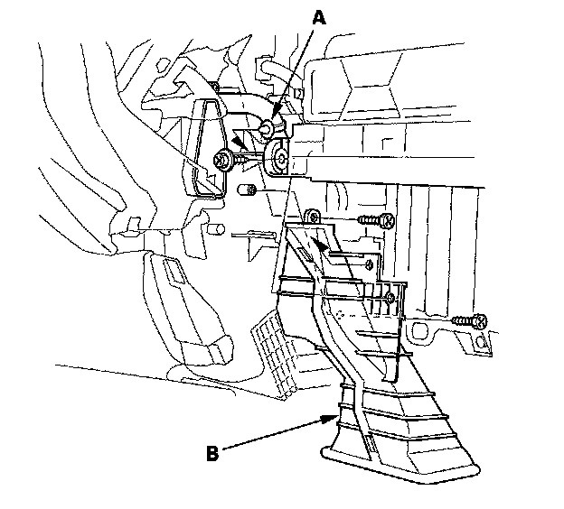
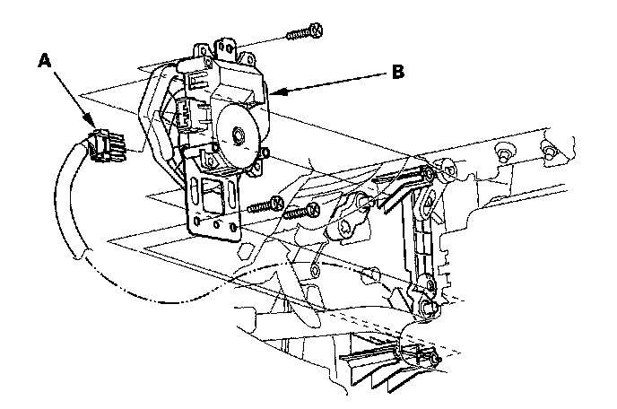

Mode Control Motor Replacement
Mode Control Motor Replacement1. Remove the glove box.

2. Remove the wire harness clip (A), the self-tapping screws, and the passenger's heater duct (B).

3. Disconnect the 7P connector (A) from the mode control motor (B). Remove the self-tapping screws and the mode control motor from the heater unit.
4. Install the motor in the reverse order of removal.
Make sure the pin on the motor is properly engaged with the linkage. After installation, make sure the motor runs smoothly.